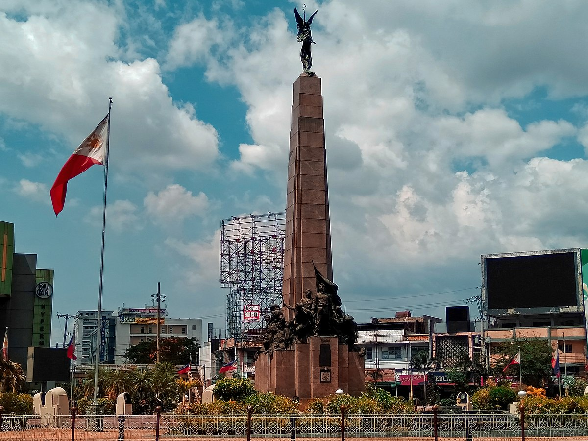

Early History
Caloocan City traces its roots to the pre-colonial period when it was a small agricultural community. During the Spanish era, it became a strategic location due to its proximity to Manila, playing an important role in trade and governance.
Revolutionary Role
The city became a focal point during the Philippine Revolution. Many Katipuneros came from Caloocan, and it became one of the strongholds of the movement against Spanish colonization. Its contributions to independence remain a source of pride for its people.
Background of Monument
The Andrés Bonifacio Monument, commonly known simply as Bonifacio Monument or Monumento, is a memorial monument in Caloocan, Philippines, which was designed by National Artist Guillermo Tolentino to commemorate the Philippine revolutionary Andrés Bonifacio, the founder and Supremo of the Katipunan, who fought for independence from colonial rule by Spain.
History of Bonifacio Monument
The Bonifacio Monument recalls the Philippine Revolution spearheaded by Andrés Bonifacio, who had urged his men to rise against the colonial rule of Spain. His call to take arms against the Spanish rule was given on August 23, 1896, widely known as the "Cry of Pugad Lawin".